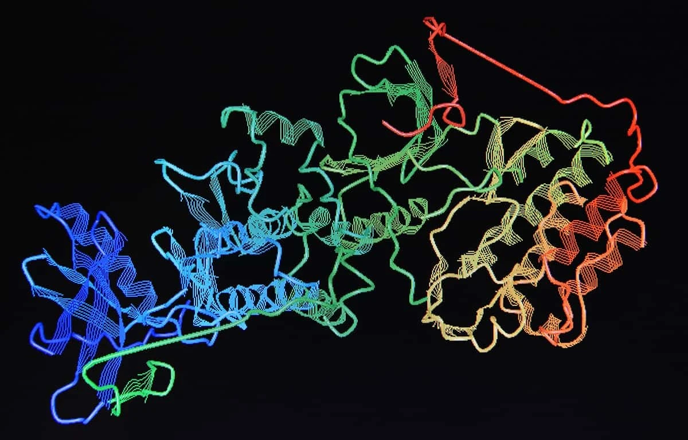
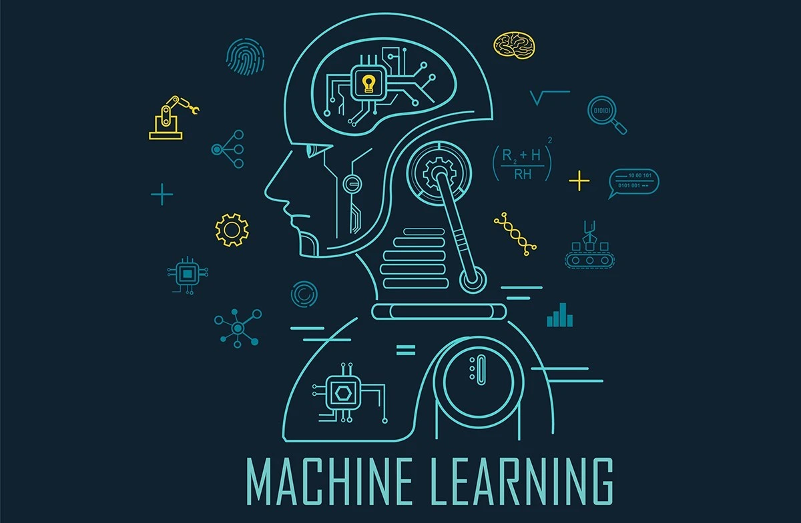

Applications of Quantum Computing

Khyatee Atolia
|
18 July 2022
|
4 Minute Read

In our last article, we talked about what the three main principles of quantum computing were, and in this article we are going to talk about the three major applications of quantum computing.
Quantum Computing is Not Better Classical Computing
But before we get started on the applications, it is important to realize that quantum computers are not just better classical computers, they are a whole new type of computer. Just like a lightbulb is not a better candle, it is something else entirely. The new quantum computers are not just better classical quantum computers, they use the laws of quantum physics, and are built differently as well. And quantum computers are not faster than classical computers either- they DO NOT take less time to do the same task than classical computers. What they do, however, is that they reduce the number of steps required to solve a problem EXPONENTIALLY, which is what makes them particularly useful in some particular cases. They cannot decrease the time required to download your latest movie or surf the web, but below are some important places that quantum computing can take the lead.
1. Quantum Cryptography
One of the major applications of quantum computing is in the field of cryptography. Using quantum computing we might be able to create such an advanced level of cryptography that no information can be intercepted without being destroyed completely. Most of the popular public key ciphers that we use today are based on the difficulty of factoring integers or the discrete logarithm problem, both of which are solvable. These are used to protect secure web pages, encrypted email, and many other types of data. Breaking these would have significant ramifications for electronic privacy and security. However, factoring large integers is something that quantum computers can do easily, and hence they would be able to break most of our cryptography methods used today. We can also, however, use something called Quantum cryptography to decipher our data.
Quantum cryptography uses individual particles of light, or photons, to transmit data over fiber optic wire. The photons represent binary bits that can exist in a superposition. The secure properties include the following particles can exist in more than one place or state at a time; a quantum property cannot be observed without changing or disturbing it; whole particles cannot be copied.
These properties make it impossible to measure the quantum state of any system without disturbing that system, even using quantum computers.
2. Quantum Biology
Another major application that quantum computers can possibly have are in the biology and computer-aided drug design fields. Using classical computers, many challenges in biology remain computationally infeasible. The best algorithms for problems like predicting the folding of a protein, calculating the binding affinity of a ligand for a macromolecule, or finding optimal large-scale genomic alignments require computational resources that are beyond even the most powerful supercomputers of our era. In drug design, researchers face countless ways in which atoms in a drug molecule can be arranged, and they seek the one best suited to the particular function their drug is to perform. However, there are too many ways that the protein can fold into, and this is where classical computers run into a wall. In order to predict the structure that a protein will fold into, you have to find the lowest-energy conformation of a chain of amino acids from the zillions of possible conformations that that chain can twist into. With quantum computers, there is the prospect of considering all possible conformations, as an initial equal superposition of all possible strings of 1s and 0s. One can shift the probability distribution of states until likely to observe a string of 1s and 0s representing the best combination out of them all.
3. Quantum Machine Learning
Quantum machine learning is a research area that explores the intersection of ideas from quantum computing and machine learning. While machine learning algorithms are used to compute immense quantities of data, quantum machine learning utilizes qubits and quantum operations to improve computational speed and data storage even more. A number of quantum algorithms for machine learning are based on the idea of amplitude encoding- to associate the amplitudes of a quantum state with the inputs and outputs of computations. In quantum mechanics, a probability amplitude is a number used for describing the behavior of systems. The modulus squared of this quantity represents a probability density, or the region where the qubit is between 0 and 1. Since a state of n qubits is described by 2^n complex amplitudes, this information encoding can allow for exponentially greater ways that a computer can be trained to learn something. This fact can have impacts across all areas, especially in neural networking and artificial intelligence.
These are all exciting things where the new quantum computer field can have advantages. However, it may very well be that the primary application of quantum computing is one that we have not been able to foresee yet.